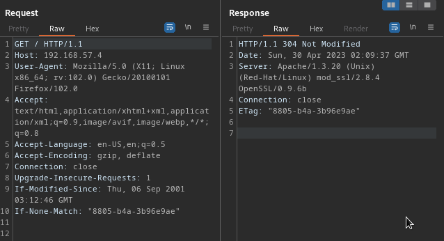

web Vulnerability scanner:nikto
#nikto -h http://192.169.57.4
-h:host
vulnerabiltity: mod_ssl/2.8.4:vulnerable to remote buffer overflow
Apache/1.3.20 (Unix) (Red-Hat/Linux) mod_ssl/2.8.4 OpenSSL/0.9.6b(disclosed in Burp Suite target section :site map sub section)
so Information disclosure:server header disclose version information

directory buster:
tools:
1)dirbuster:
2)dirb
3)gobuster
#gobuster dir -e -u http://192.168.57.4 -w /usr/share/wordlists/dirbuster/directory-list-2.3-small.txt
-u:url
/usr/share/wordlists:path to wordlists